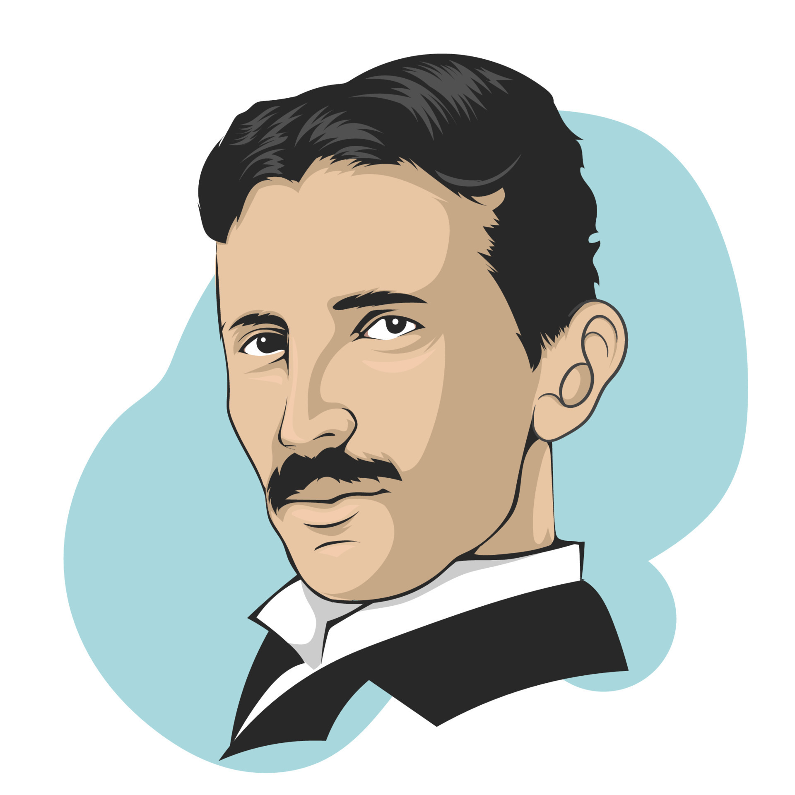

Nikola Tesla
- Born: 10 July 1856
- Place: Smiljan, Austrian Empire (modern-day Croatia)
- Died: 7 January 1943 (aged 86)
- Education: Graz University of Technology (dropped out)
- Engineering career
- Electrical engineering
- Mechanical engineering
- Projects
- Alternating current
- High-voltage, high-frequency power experiments
Key Contributions
- Developed AC electrical systems that revolutionized power distribution.
- Invented the Tesla coil, a foundational technology for wireless transmission.
- Contributed to the development of radio communication and X-ray technology.
- Pioneered research in wireless energy transmission and wireless communication.
- Tesla designed and developed the first practical induction motor and transformer.
- Tesla contributed to the development of radio communication, often overshadowed by Guglielmo Marconi's fame.
Less Known Facts
- Photographic Memory: Tesla was known to have an exceptional photographic memory.
- Obsession with the Number 3: Tesla had a fascination with the number 3 and often felt compelled to engage in activities or make decisions in multiples of 3.
- OCD and Phobias: Tesla exhibited obsessive-compulsive tendencies and had various phobias, including an intense fear of germs and a strong aversion to pearls.
- Love for Pigeons: In his later years, Tesla developed a deep affection for pigeons and often fed them and cared for injured ones.
- Earthquake Machine: Tesla claimed to have developed a device that could create controlled earthquakes.
Other Idol